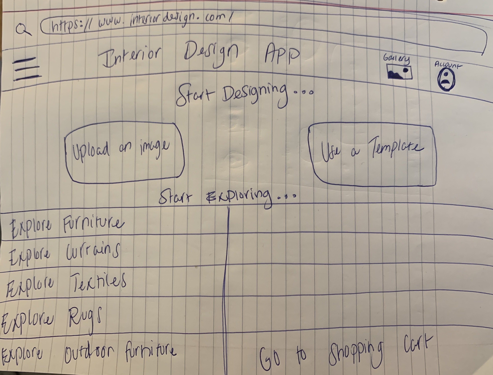

Style My Space
Custom interior design solutions for homeowners looking to make a change before making the commitment.
Style My Space, or SMS, is a virtual interior design application that utilizes AR technology. Users can upload a photo of the rooms they would like to decorate and implement interior design elements directly on the application. This gives users an idea of what the design will look like, allowing them to make any adjustments before finalizing purchases, preventing any future regrets. Users can purchase furniture, curtains, lighting, fabrics, rugs, and artwork directly from SMS, so there’s no hassle in searching for desired interior design items separately. SMS is compatible with iOS and Android systems.
Roles
- UX Designer
- UI Designer
- UX Researcher
- Product Designer
Deliverables
- User personas
- Low-fidelity sketches
- Mid-fidelity prototype
- Usability testing
- High-fidelity prototype
- Style guide
Specifications
- Class: Prototyping and Implementation
- Duration: 10 weeks
- Tools: Axure, Illustrator, and Photoshop
Problem Statement
It’s a fact that many homeowners are stuck and don’t know where to turn when it comes to designing the interior of their homes. Hiring an interior designer can be expensive and a cumbersome process. Style My Space offers the ability for homeowners to upload a photo of a room and then try furnishing it with different interior design elements, such as change wall colors, experiment with light, add and remove curtains and furniture, along with many more features. Homeowners can then vision how a designed room would look before making any commitment to purchase.
Target Audience
Style My Space offers its services to a wide variety of users from various demographics. The target audience includes anyone looking to update the interior design of their home, including homeowners and renters alike. Because this is a free mobile application, it is accessible to users from many different socio-economic classes as well.
Initial Design Concept
Users Personas
Digital Narrative:
Barbara recently bought a new home and is looking to add new furniture as well. She downloads the interior design app to test out new designs within her home. Because she is also a pet owner, Barbara is looking for stain resistant furniture and curtains. She also takes into consideration the colors of certain items to avoid pet stains as well. Barbara is looking to design multiple different rooms as opposed to just one. She can test out many different items within the room before committing. She can also make purchases and decide if she is ready to fully commit to it after seeing it physically. If she is unhappy with the final product, she can return items through the app and make changes.

Digital Narrative:
Roger works for an interior design company, and they are implementing this app in order to make things easier for clients and collaboration. He would typically use the app for one of his clients rather than himself. Some goals for using the app would be to test out new designs and present them to clients without having to commit fully and clients can make changes. Collaborate with coworkers on different designs and have one space for everything. On a typical design project, Roger can upload a photo of the room that needs to be designed for a particular client. He can then add in all of their requests for changes within the room. He can also put his own flair and creativity within the design and make suggestions for changes to the client as well. Roger can also make purchases for the client once they have approved all of the design changes.
Low-Fidelity Sketches

Mobile Prototype

Desktop Prototype
User Research
Our goal for usability testing includes setting a baseline of user interaction, establishing and validating user interaction measures, and identifying potential design concerns to be addressed in order to improve user satisfaction.
All 3 of our users had seldom experience in interior design and/or the use of a virtual interior design app. Users were asked to perform the following four tasks on both of our mobile and desktop mid-fidelity prototypes:
- Create an account in Style My Space and login.
- Select a mid-century modern sofa to match your new modern home.
- Select a stain resistant fabric for your sofa.
- Add your customized mid-century modern sofa to the cart
Mid-Fidelity Prototypes
Findings & Recommendations
High Priority
- Mobile + Desktop: Participants were confused with the “Start Designing” / ”Go to Login” page because it felt repetitive to them. We removed this and made the login/create an account screen show up first.
- Mobile: Participants expected to see an email verification page after creating an account.
- Mobile: Participants were confused that there was no product information page after clicking a product image.
- Desktop: Participants expected to see a global navigation bar on every page.
- Mobile + Desktop: Participants had trouble going back to previous pages and a back button was needed on each page.
Medium Priority
- Mobile + Desktop: Participants had trouble viewing images on the product pages and we made these bigger.
- Mobile: Participants said the text on the receipt page should be bigger.
- Mobile + Desktop: Participants thought the “remember me” box was clickable and we changed this in the final prototype.
Low Priority
- Desktop: Participants expected to see the footer with contact info on the bottom of all pages.
- Mobile + Desktop: Participants expected and wanted to read more about the product and the reviews before adding the product to their cart.
Final Design Concept
Design Principles/Tenets
- We didn't interrupt or give users obstacles – we made obvious pathways which offer a simple and "easy ride".
- We offered few options and didn't hinder users with nice-to-haves. In other words, we tried to give users needed alternatives instead.
- We reduced distractions and let users perform tasks consecutively, not simultaneously.
- We clustered related objects together.
- We tried to convey an easy-to-scan visual hierarchy that reflects users’ needs, with commonly used items handily available.
- We made things easy to find. Not complex.
- We made our designs from the Lo-Fi to Hi-Fi prototypes, efficient and streamlined.
High-Fidelity Prototypes


Lessons Learned
We learned that some of the users did not understand that our prototype is simply a prototype which meant that not all interactions are complete. We have learned for test scripts and protocols, we need to make it clear to test participants that our prototype isn’t fully functional so the interactions that they expect to see would not/cannot occur.
Overall in this round, the users were expecting a shopping experience like shopping on mobile and desktop. After discussing marketing/branding and making personas, we should have created a user journey map to map out the online shopping experience so we can design our product accordingly to the experience. For example, the users noticed that the email verification and product page were not shown in the mobile version. By journey mapping how a user shops online via mobile, we would have for sure added those steps into the design.
Due to time and recruiting constraints, we would have done another round of testing to see if our design revisions would be successful. For our revised design, we would have revised the testing script and tested to see if users would find it useful to have the “back” and “next” buttons placed at the bottom of the screen in the mobile version. We want to test that because by adding the “back” and “next” buttons at the bottom, we removed the navigation icons even though the user could still navigate to other pages through the hamburger menu.
Next Steps
- The possibility of partnering with furniture stores, or repair or design services to expand SMS’s customer options and product inventory.
- Increasing market and user acceptance. This will undoubtedly create more demand.
- Eventually, implementing 3D and Virtual Navigation technology to the app. Users can create a 2D floor plan and then convert it to 3D. Users will also have the option of dragging or dropping room layouts ranging from square, rectangle, and T and L shaped dimensions. Furthermore, with Virtual Navigation, users can take tours of the created rooms.